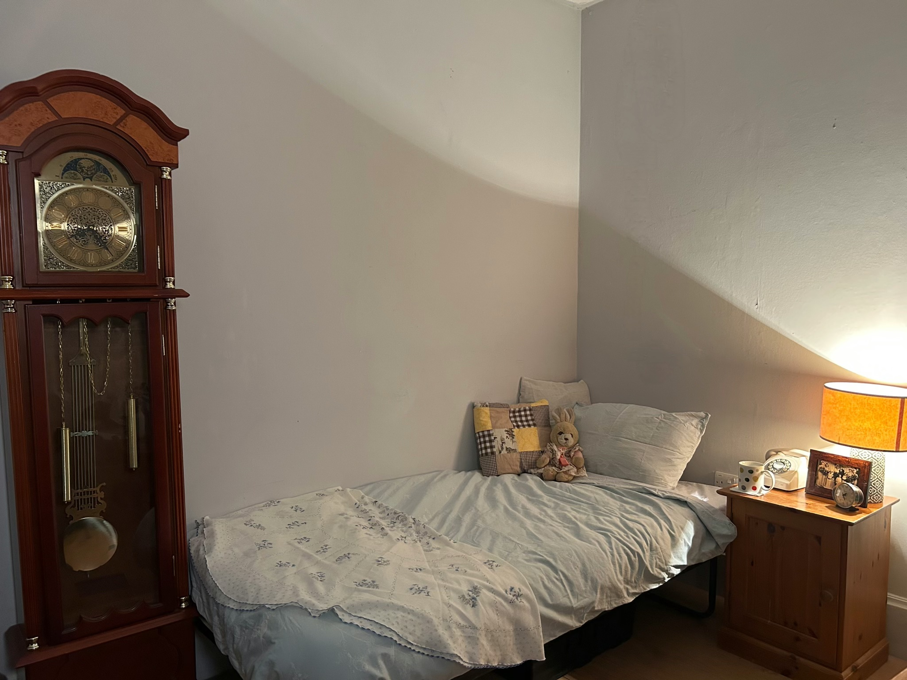
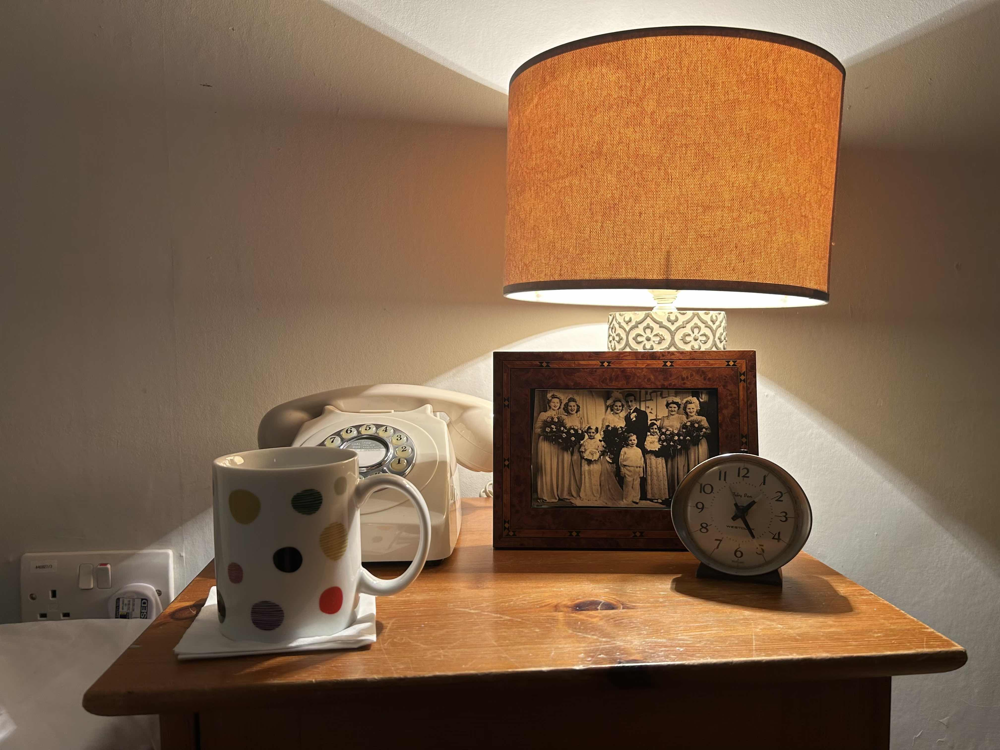

Grandfather Clock: I love the ornate grandfather clock, it is just beautiful and I wanted to find a space for it in one of my sets. I thought that Doris would have chosen this if she was in a charity shop and would have appreciated its beauty so it now is pride of place at the end of her bed.
Bedding: Since Doris lives in a care home I wanted to create a space that was relatively simple but had the interior style of someone of her age. She loves knitting and sewing so I added a handmade patch cushion to her bed that I could imagine her making. The bedding is simple but cute with little birds embroidered on it which I thought she would like.

Telephone: The telephone is significant as Doris's family live quite a long way away from her retirement home so she does not get to see them very often. so she always has weekly phone calls with all of her children to get updates on their lives and here about her grandchildren. Doris is also a creature of comfort so she has a quite old fashioned phone as she always says “if it ain't broke don't fix it.”
Photos: Doris loves having photos around her room as she is very family orientated.. She has her favourite wedding photo on her bedside table and picture of her grandchildren dotted around her room.
Bedside Table: For her bedside table I thought it needed to have the perfect balance between useful things and cute room decor. there is a wedding picture from her wedding day which she kisses every night before bed. But the bedside table is mostly filled with quite practical things, like a phone, lamp, mug and alarm clock.